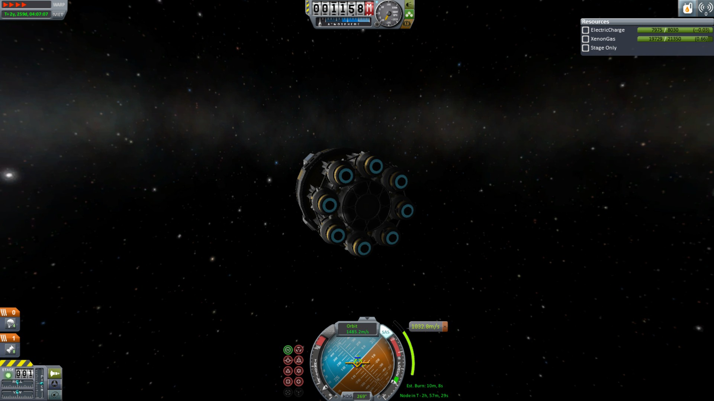
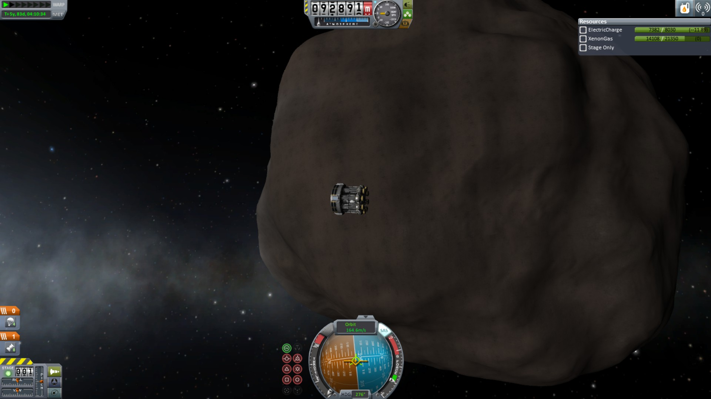
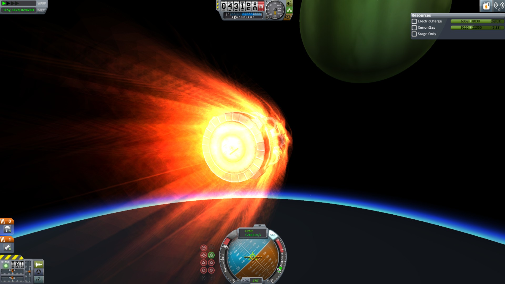
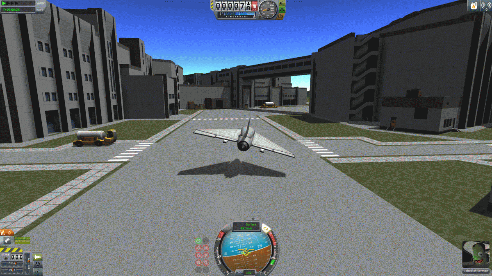
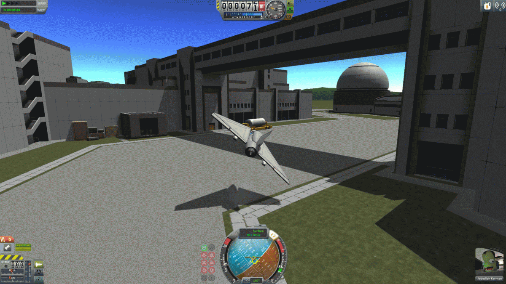
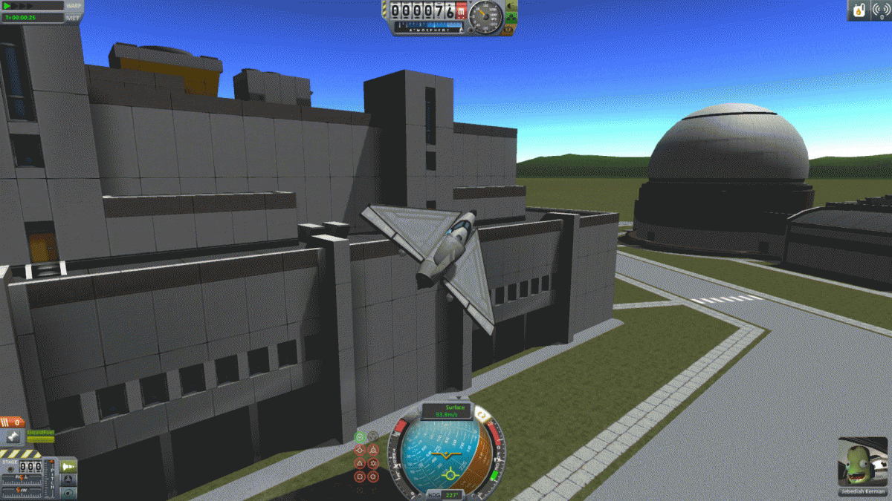

I came very close to completing the Jool-5 challenge. That is, I built an ion probe that had plenty of fuel left to get home after successfully orbiting around each planet. But, I chose to land it on Laythe instead, having misread the instructions.

Here's my probe

Flying Past Bop

During Reentry on Laythe
Another weekly challenge, I managed to make a plane that could fly underneath of the bridge at the Kerbal Space Center. You can view a GIF at the Imgur link below.

Approaching the Bridge

Going Under

Safely in the Air